ContactForceT_SDSNonlinear class
Contents
Description
This is a sub-class of the ContactForceT class for the implementation of the Nonlinear Spring-Dashpot-Slider tangent contact force model.
This model assumes that the tangent contact force has an elastic component 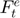, provided by a spring, a viscous component 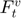, provided by a dashpot, and a friction component  , provided by a slider, which limits the total force according to Coulomb law.
, provided by a slider, which limits the total force according to Coulomb law.
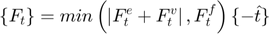
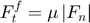
The friction coefficient 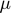 must be provided.
The elastic and viscous components can be camputed by different formulations:
- DD (Di Renzo & Di Maio):
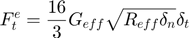

- LTH (Langston, Tuzun, Heyes):
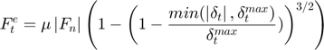
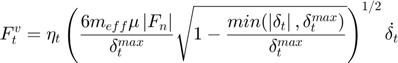
The tangent damping coefficient 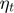 must be provided.
- ZZY (Zheng, Zhu, Yu):
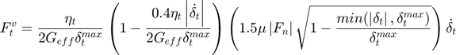
The tangent damping coefficient must be provided.
- TTI (Tsuji, Tanaka, Ishida):
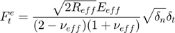
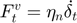
The tangent damping coefficient must be provided.
Notation:
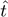: Tangent direction between elements
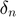: Normal overlap
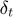: Tangent overlap
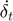: Time rate of change of tangent overlap
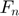: Normal contact force vector
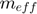: Effective mass
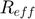: Effective contact radius
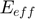: Effective Young modulus
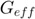: Effective shear modulus
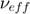: Effective Poisson ratio
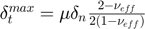: Tangent overlap when sliding starts
References:
classdef ContactForceT_SDSNonlinear < ContactForceT
Public properties
properties (SetAccess = public, GetAccess = public)
% Formulation options
formula uint8 = uint8.empty; % flag for type of nonlinear formulation
% Contact parameters
stiff double = double.empty; % stiffness coefficient
damp double = double.empty; % damping coefficient
fric double = double.empty; % friction coefficient
end
Constructor method
methods
function this = ContactForceT_SDSNonlinear()
this = this@ContactForceT(ContactForceT.SDS_NONLINEAR);
this = this.setDefaultProps();
end
end
Public methods: implementation of super-class declarations
methods
%------------------------------------------------------------------
function this = setDefaultProps(this)
end
%------------------------------------------------------------------
function this = setCteParams(this,int)
if (this.formula == this.TTI && isempty(this.damp))
if (~isempty(int.cforcen))
this.damp = int.cforcen.damp;
else
this.damp = 0;
end
end
end
%------------------------------------------------------------------
function this = evalForce(this,int)
% Force modulus (friction contribution)
if (~isempty(int.cforcen))
ff = this.fric * norm(int.cforcen.total_force);
else
ff = 0;
end
% Force modulus (viscoelastic contribution)
switch this.formula
case this.DD
this.stiff = 16 * int.eff_shear * sqrt(int.eff_radius * int.kinemat.ovlp_n) / 3;
f = this.stiff * int.kinemat.ovlp_t;
case this.LTH
max_ovlp = this.fric * int.kinemat.ovlp_n * (2 - int.avg_poisson) / (2 - 2 * int.avg_poisson);
a = 1 - min(abs(int.kinemat.ovlp_t),max_ovlp) / max_ovlp;
fe = ff * (1 - a^(3/2));
fv = this.damp * sqrt(6 * int.eff_mass * ff * sqrt(a) / max_ovlp) * int.kinemat.vel_t;
f = fe + fv;
case this.ZZY
max_ovlp = this.fric * int.kinemat.ovlp_n * (2 - int.avg_poisson) / (2 - 2 * int.avg_poisson);
a = 1 - min(abs(int.kinemat.ovlp_t),max_ovlp) / max_ovlp;
fe = ff * (1 - a^(3/2));
fv = this.damp / (2 * int.eff_shear * max_ovlp) * (1 - 0.4 * this.damp * abs(int.kinemat.vel_t) / (2 * int.eff_shear * max_ovlp)) * (1.5 * ff * sqrt(a)) * int.kinemat.vel_t;
f = fe + fv;
case this.TTI
this.stiff = sqrt(2 * int.eff_radius) * int.eff_young * sqrt(int.kinemat.ovlp_n) / ((2 - int.avg_poisson) * (1 + int.avg_poisson));
fe = this.stiff * int.kinemat.ovlp_t;
fv = this.damp * int.kinemat.vel_t;
f = fe + fv;
end
% Limit viscoelastic force by Coulomb law
f = min(abs(f),abs(ff));
% Total tangential force vector (against deformation and motion)
this.total_force = -f * int.kinemat.dir_t;
end
end
end